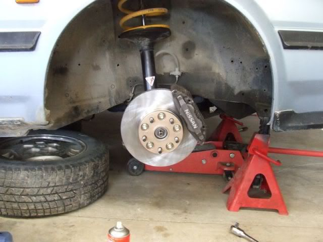

-
So I've been trying to find the answer but for some reason (incompetence or lack of people asking) I can't seem to find a final answer. When doing a Z32/R32 (or 87-89T) brake swap, why exactly are the 87-89T hubs needed? I've seen people say bolt-on vs. slip on rotors, but why is that particularly significant? Is it just a need for longer studs or is there something physically preventing the larger brakes from being used on the older hubs that cannot be given a fairly simple fix? Just curious, because I am getting larger wheels and would like to have some better looking brakes to go with them, but if I absolutely have to get the late model turbo hubs then I'll be spending a pretty penny more than I planned on already.
I also figure I can't be the only person stupid enough to ask so it could be valuable for someone else that wants to see the same answer in the future.
Oh, and yes, I really just want to get bigger brakes for the looks. I don't want people seeing my puny ass brakes when I have wheels that actually expose the calipers and rotors. -
Most aftermarket rotors (specifically the rotor hat) do not fit over bolt on style hubs. People have turned them down to a smaller diameter in the past (though I am unsure the offset difference between the two) to make room.
Slip on (late turbo hubs) accept z32/s-chassis/r-chassis brakes or brake upgrades with just shimming the caliper (by shim I mean a washer).86na - BlueZ
Shiro #366 - Kouki Monster
85t - Mr Tickles -
Sounds like you need a bbk for the non-turbo hubs and have them shaved down … much cheaper than buying the turbo hubs at current market price, savings that can then go to the rest of the upgrade right?
Go see the ASCO subforum for the groupbuy
-
As adamvann said, people machine the bolt-on style hubs down to a 140mm diameter and press in Turbo wheel studs. After that it is just a case of spacing the caliper with a washer to achieve the offset required.
-
Has it been confirmed that bolt on style hubs have the same offset as slip on hubs? I know people have shaved down the bolt on hubs, but it normally involved something other than the z32 rotor and brake setup.86na - BlueZ
Shiro #366 - Kouki Monster
85t - Mr Tickles -
No the bolt on hubs without a rotor are the same height as the slip-on hubs WITH a rotor -
i have turbo hubs laying around that I will never use… what do they go for these days? I can't even find any for sale to see. -
I have seen them go for as much as $250, but $150-$200 is more likely.
1988 300ZX Turbo, Shiro Special #760
1988 300ZX Turbo Automatic (wife's car)
1991 Hard-body 2WD
http://zccw.org/zccw/?page_id=1215 -
Ok, I dug through the brake thread and yes it looks like a couple of people are running straight z32 setup on turned down bolt on hubs. I just never really saw any good confirmation (but james should be able to put this to bed). I just know when I switched from bolt bolt on hubs on my 86 (zenki style hubs) the rear dust boot/seal would interfere against the spindle/dust shield. I had to install bolt on style rear seals onto the slip on style hub to make it work.G-E;341405 wrote: No the bolt on hubs without a rotor are the same height as the slip-on hubs WITH a rotor
This is why I was unsure of there was a difference in hub offset. I know slip on hubs only came with the twin piston calipers, so I was unsure if the caliper was offset accordingly.
86na - BlueZ
Shiro #366 - Kouki Monster
85t - Mr Tickles -
So it is possible to turn down the bolt on hubs, but considering the time and effort required it is just easier to go with the 87-89T hubs, yes? I found some R32 brakes at a good price and plan on getting them, so I guess I'll just figure out what to do about the hubs when the time comes. I just figured it would be good to get the options all laid out in one spot so I can figure it out a bit easier. -
Yes, 87-89t (slip on hubs) would be a bolt and go. Your bolt on hubs would need to be modified to work.86na - BlueZ
Shiro #366 - Kouki Monster
85t - Mr Tickles -
Sounds good. I feel I should probably run to the junkyard and start ripping front hubs off all the late model turbos around here. Could make some decent cash that way it seems. -
I don't understand why anyone would want a BBK that requires having the hubs turned anyways…when you can just have the hubs turned then run any of the Z32 BBKs like people have been doing for years. A true BBK for bolt-on hubs would be one that requires no modification to the hubs. IMO- VG30DET (HE341) 86 300ZX - 1982 280ZX Turbo - Headered NA 1986 300ZX 2+2 - 2000 Xterra - -
Alright, I was digging through james's build thread and tried to search out some post in the suspension area as I know he went into more depth on everything (why can't we search sub-forums?). Looks like he used r32 calipers and rotors.
I do remember him going into the bore size on the bolt on rotors IIRC it needed to be turned down as well (thats why he shows the measurement below). Again, when he reads this, I am sure he will chime in.
james;203168 wrote: old N busted

new N Hotness

and this last pic shows the 4 pot ever so slightly visable through the factory 15" wheel
car now rocks 20mm adapters front and rear
86na - BlueZ
Shiro #366 - Kouki Monster
85t - Mr Tickles -
I believe the center bore is turned down to fit a new spacer to keep the rotors hub centric as the bolt-on hubs have a smaller surface in this area. Bolt-on hubs have approx 5mm bore depth where slip-ons have approx 15mm bore depth.adamvann3;341427 wrote:
I do remember him going into the bore size on the bolt on rotors IIRC it needed to be turned down as well (thats why he shows the measurement below). Again, when he reads this, I am sure he will chime in.

Copyright © 2006–. All rights reserved. Privacy Policy